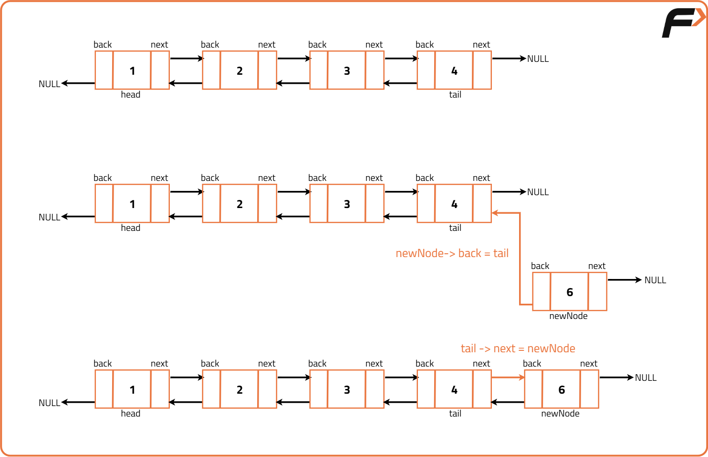

Insert at end of Doubly Linked List
Problem Statement: Given a doubly linked list, and a value ‘k’, insert a node having value ‘k’ at the end of the doubly linked list.
Examples
Example 1: Input Format: DLL: 1 <-> 2 <-> 3 <-> 4 Value to be Inserted: 6 Result: DLL: 1 <-> 2 <-> 3 <-> 4 <-> 6 Explanation: A new node with value 6 has been inserted at the end of the doubly linked list after the tail node. Example 2: Input Format: DLL: 10 <-> 20 <-> 30 Value to be Inserted: 40 Result: DLL: 10 <-> 20 <-> 30 <-> 40 Explanation: In this case, a new node with value 40 is inserted after 30, which is at the end of the doubly linked list.
Disclaimer: It's highly recommend trying to solve it before looking at the solution.
Approach
Algorithm
- To insert a new node before a given node in a doubly linked list, start by identifying the previous node of the given node. This is guaranteed because the node to be inserted before is never the head of the list.
- Create a new node with the specified value to be inserted before the given node. The back pointer of the new node should point to the previous node, and the next pointer of the new node should point to the given node.
- To properly integrate the new node into the list, update the next pointer of the previous node to point to the new node, and set the back pointer of the given node to point to the new node, ensuring the doubly linked list remains intact.
- To insert a new node at the end of the doubly linked list, begin by traversing the list from the head node until you reach the tail.
- Create a new node with the provided data, setting its back pointer to the current tail node and its next pointer to null, as this new node will become the tail of the list.
- Update the next pointer of the current tail node to point to the newly created node, making the new node the new tail of the list.
- Finally, return the head of the updated doubly linked list, which remains unchanged after this operation.

Code
#include <iostream>
#include <bits/stdc++.h>
using namespace std;
// Define a Node class for doubly linked list
class Node {
public:
int data; // Data stored in the node
Node* next; // Pointer to the next node in the list (forward direction)
Node* back; // Pointer to the previous node in the list (backward direction)
// Constructor for a Node with both data, next, and back references
Node(int data1, Node* next1, Node* back1) {
data = data1;
next = next1;
back = back1;
}
// Constructor for a Node with only data, no next or back references (end of the list)
Node(int data1) {
data = data1;
next = nullptr;
back = nullptr;
}
};
// Function to convert an array to a doubly linked list
Node* convertArr2DLL(vector<int> arr) {
// Create the head node with the first element of the array
Node* head = new Node(arr[0]);
Node* prev = head; // Initialize 'prev' to the head node
// Traverse the array to create the doubly linked list
for (int i = 1; i < arr.size(); i++) {
// Create a new node with data from the array and set its 'back' pointer to the previous node
Node* temp = new Node(arr[i], nullptr, prev);
prev->next = temp; // Set 'next' of the previous node to the new node
prev = temp; // Move 'prev' to the new node
}
return head; // Return the head of the doubly linked list
}
// Function to print the elements of the doubly linked list
void print(Node* head) {
// Traverse through the list and print each node's data
while (head != nullptr) {
cout << head->data << " "; // Print the data of the current node
head = head->next; // Move to the next node
}
}
// Function to insert a new node with value 'k' at the end of the doubly linked list
Node* insertAtTail(Node* head, int k) {
// Create a new node with data 'k'
Node* newNode = new Node(k);
// If the doubly linked list is empty, return the new node as the head
if (head == nullptr) {
return newNode;
}
// Traverse to the last node of the doubly linked list
Node* tail = head;
while (tail->next != nullptr) {
tail = tail->next;
}
// Connect the new node to the last node
tail->next = newNode;
newNode->back = tail; // Set the 'back' pointer of the new node to the previous node
return head; // Return the head of the modified list
}
int main() {
// Initialize an array of integers
vector<int> arr = {12, 5, 8, 7, 4};
// Convert the array into a doubly linked list
Node* head = convertArr2DLL(arr);
// Print the initially created doubly linked list
cout << "Doubly Linked List Initially: " << endl;
print(head);
// Insert a node with value 10 at the end of the doubly linked list
cout << endl << "Doubly Linked List After Inserting at the tail with value 10: " << endl;
head = insertAtTail(head, 10);
print(head);
return 0;
}Complexity Analysis
Time Complexity: O(n), where n is the number of nodes in the doubly linked list. This is because we traverse the list to find the tail node before inserting the new node.
Space Complexity: O(1), as we are only using a constant amount of extra space for the new node, regardless of the size of the list.